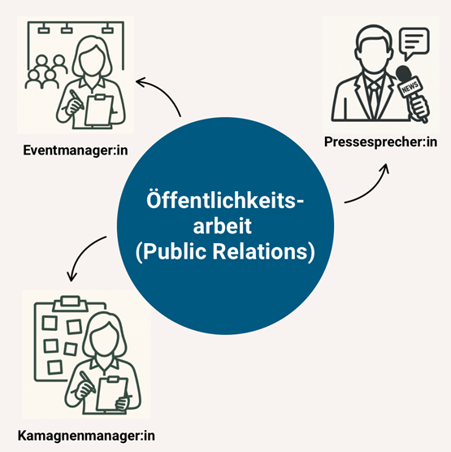

Studiengangseinführung
Sprache begegnet uns überall – im Gespräch mit Freund*innen, beim Schreiben von Nachrichten, im Netz oder im beruflichen Kontext. Wir sprechen, schreiben, lesen und hören – ganz selbstverständlich und doch hochkomplex. Die Sprach- und Kommunikationswissenschaft beschäftigt sich genau damit: mit den Formen, Funktionen und Wirkungen von Sprache im Alltag.
Der Studiengang Sprach- und Kommunikationswissenschaft an der RWTH Aachen verbindet diese Grundlagen mit aktuellen Fragen der digitalen Kommunikation.
- Wie verändert sich Kommunikation in sozialen Medien?
- Wie funktioniert Mensch-Maschinen-Interaktion?
- Wie lassen sich solche Prozesse analysieren und gestalten?
Genau das lernst du hier – theoretisch fundiert und praxisnah.
Steckbrief
- Abschluss: Bachelor of Arts (B.A.)
- Regelstudienzeit: 6 Semester
- Studienbeginn: Wintersemester
- Unterrichtssprache: Deutsch
- NC: Kein Numerus Clausus
Studienverlaufsplan (Beispiel)
| Semester | Inhalte |
|---|---|
| 1.–2. | Grundlagen der Sprach- und Kommunikationswissenschaft, Einführung in die Linguistik |
| 3.–4. | Digitale Kommunikation, Medienanalyse, Projektarbeit |
| 5.–6. | Praxisphase, Vertiefung, Bachelorarbeit |
Berufsperspektiven
